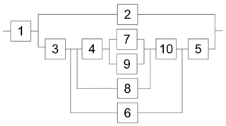
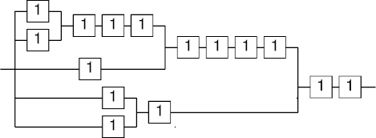

R = 1
error = -2.14

R = 3
error = -.142

R = 11 / 4
error = -.392

R = 29 / 9
error = .0806

R = 119 / 38
error = -.0100

R = 22 / 7
error = .00126

R = 1043 / 332
error = -.0000264
Here are the best known approximations using resistors 1-n:
R = 1 error = -2.14 | R = 3 error = -.142 | R = 11 / 4 error = -.392 | R = 29 / 9 error = .0806 | R = 119 / 38 error = -.0100 | R = 22 / 7 error = .00126 | R = 1043 / 332 error = -.0000264 |
 R = 6723 / 2140 error = -.00000387 (George Sicherman) |  R = 355 / 113 error = 2.67 × 10-7 (Jon Palin) |  R = 110028 / 35023 error = 1.44 × 10-8 (George Sicherman) |  R = 208341 / 66317 error = 1.22 × 10-10 (Dave Langers) |
 R = 1 error = -1.72 |  R = 3 error = .282 |  R = 11 / 4 error = .0317 |  R = 50 / 19 error = -.0867 |  R = 19 / 7 error = -.00400 |  R = 106 / 39 error = -.000333 |  R = 6244 / 2297 error = .0000464 |
 R = 2721 / 1001 error = -0.000000110 (George Sicherman) |  R = 43623 / 16048 error = 8.24 × 10-7 (George Sicherman) |  R = 222630 / 81901 error = 4.59 × 10-10 (George Sicherman) |  R = 222630 / 81901 error = 4.59 × 10-10 (Dave Langers) |
 R = 1 error = -.618 |  R = 2 / 3 error = -.951 |  R = 3 / 2 error = .118 |  R = 44 / 27 error = .0116 |  R = 60 / 37 error = .00359 |  R = 34 / 21 error = .00101 |
 R = 7998 / 4943 error = -.0000117 |  R = 29754 / 18389 error = -0.00000147 (George Sicherman) |  R = 2584 / 1597 error = -1.75 × 10-7 (Jon Palin) |  R = 526772 / 325563 error = 1.25 × 10-9 (George Sicherman) |  R = 46368 / 28657 error = -5.45 × 10-10 (Dave Langers) |
 R = 1 error = -.414 |  R = 2 / 3 error = -.748 |  R = 4 / 3 error = -.0809 |  R = 44 / 31 error = .00514 |  R = 24 / 17 error = -.00245 |  R = 140 / 99 error = -.0000721 |  R = 6190 / 4377 error = -.00000292 |
 R = 6685 / 4727 error = .00000264 (George Sicherman) |  R = 32814 / 23203 error = 1.17 × 10-7 (George Sicherman) |  R = 14845 / 10497 error = 2.26 × 10-8 (Jon Palin) |  R = 86523 / 61181 error = 6.61 × 10-10 (Dave Langers) |
 R = 1 error = -2.14 |  R = 4 error = .858 |  R = 23 / 8 error = -.267 (George Sicherman) |  R = 161 / 51 error = .0153 (George Sicherman) |  R = 518 / 165 error = -.00220 (George Sicherman) |  R = 2077 / 661 error = .000616 (George Sicherman) |  R = 2108 / 671 error = -.0000129 (George Sicherman) |
 R = 355 / 113 error = 2.67 × 10-7 (Dave Langers) |  R = 179608 / 57171 error = 1.12 × 10-7 (Dave Langers) |  R = 6000687 / 1910078 error = -6.59 × 10-9 (Dave Langers) |  R = 12493715 / 3976873 error = -2.66 × 10-10 (Dave Langers) |
 R = 1 error = -1.72 |  R = 4 error = 1.282 |  R = 23 / 8 error = .157 (George Sicherman) |  R = 11 / 4 error = .0317 (George Sicherman) |  R = 280 / 103 error = .000165 (George Sicherman) |  R = 6349 / 2335 error = .000776 (George Sicherman) |  R = 12360 / 4547 error = -.00000604 (George Sicherman) |
 R = 220635 / 81167 error = 2.70 × 10-6 (Dave Langers) |  R = 483335 / 177809 error = 1.48 × 10-7 (Dave Langers) |  R = 14240785 / 5238892 error = 1.43 × 10-8 (Dave Langers) |  R = 26607831 / 9788474 error = -2.60 × 10-10 (Dave Langers) |
 R = 1 error = -.618 |  R = 3 / 4 error = -.868 (George Sicherman) |  R = 2 error = .382 (George Sicherman) |  R = 15 / 9 error = -.0625 (George Sicherman) |  R = 423 / 260 error = .00889 (George Sicherman) |  R = 13980 / 8641 error = -.000166 (George Sicherman) |  R = 65130 / 40253 error = -.0000179 (George Sicherman) |
 R = 31205 / 19286 error = -.0000209 (Dave Langers) |  R = 677286 / 418585 error = -2.97 × 10-6 (Dave Langers) |  R = 2507655 / 1549816 error = 2.30 × 10-8 (Dave Langers) |  R = 278284266 / 171989135 error = -7.31 × 10-10 (Dave Langers) |
 R = 1 error = -.414 |  R = 3 / 4 error = -.664 (George Sicherman) |  R = 8 / 9 error = -.525 (George Sicherman) |  R = 120 / 79 error = .105 (George Sicherman) |  R = 1260 / 887 error = .00631 (George Sicherman) |  R = 7287 / 5150 error = .000738 (George Sicherman) |
 R = 3015 / 2132 error = -.0000485 (George Sicherman) |  R = 24885 / 17597 error = -.0000521 (Dave Langers) |  R = 150195 / 106204 error = -1.29 × 10-6 (Dave Langers) |  R = 4411352 / 3119297 error = -3.93 × 10-8 (Dave Langers) |  R = 27720 / 19601 error = -1.84 × 10-9 (Dave Langers) |
 R = 3 error = -.14 (Umut Uludag) |  R = 3 error = -.14 (Umut Uludag) |  R = 3 error = -.14 (Umut Uludag) |  R = 16 / 5 error = .0584 (Umut Uludag) |  R = 22 / 7 error = .00127 (Umut Uludag) |  R = 22 / 7 error = .00127 (George Sicherman) |  R = 22 / 7 error = .00127 (George Sicherman) |  R = 22 / 7 error = .00127 (Dave Langers) |
 R = 22 / 7 error = .00127 (Dave Langers) |  R = 22 / 7 error = .00127 (Dave Langers) |  R = 355 / 113 error = 2.67 × 10-7 (Dave Langers) |  R = 355 / 113 error = 2.67 × 10-7 (Dave Langers) |
 R = 355 / 113 error = 2.67 × 10-7 (Dave Langers) |  R = 355 / 113 error = 2.67 × 10-7 (Dave Langers) |  R = 355 / 113 error = 2.67 × 10-7 (Dave Langers/Michel Moffit) |
 R = 3 error = .282 (Umut Uludag) |  R = 5 / 2 error = -.218 (Umut Uludag) |  R = 8 / 3 error = -.052 (Umut Uludag) |  R = 11 / 4 error = .032 (Umut Uludag) |  R = 8 / 3 error = -.052 (Umut Uludag) |  R = 30 / 11 error = .00899 (Dave Langers) |  R = 49 / 18 error = .00394 (Dave Langers) |  R = 19 / 7 error = -.00400 (Dave Langers) |
 R = 125 / 46 error = -.000891 (Dave Langers) |  R = 106 / 39 error = -.000333 (Dave Langers) |  R = 280 / 103 error = .000165 (Dave Langers) |  R = 492 / 181 error = -.0000498 (Dave Langers) |
 R = 193 / 71 error = .0000280 (Dave Langers) |  R = 1264 / 465 error = -.00000265 (Dave Langers) |  R = 1264 / 465 error = -.00000265 (Dave Langers) |
 R = 2 error = .382 (Umut Uludag) |  R = 3 / 2 error = -.118 (Umut Uludag) |  R = 5 / 3 error = .049 (Umut Uludag) |  R = 8 / 5 error = -.018 (Umut Uludag) |  R = 8 / 5 error = -.018 (Umut Uludag) |  R = 21 / 13 error = -.00265 (Dave Langers) |  R = 21 / 13 error = -.00265 (Dave Langers) |  R = 34 / 21 error = .00101 (Dave Langers) |
 R = 55 / 34 error = -.000387 (Dave Langers) |  R = 89 / 55 error = .000148 (Dave Langers) |  R = 144 / 89 error = -.0000565 (Dave Langers) |  R = 233 / 144 error = .0000216 (Dave Langers) |
 R = 377 / 233 error = -8.24 × 10-6 (Dave Langers) |  R = 610 / 377 error = 3.15 × 10-6 (Dave Langers) |  R = 987 / 610 error = -1.20 × 10-6 (Dave Langers) |
 R = 1 error = -.414 (Umut Uludag) |  R = 3 / 2 error = .086 (Umut Uludag) |  R = 4 / 3 error = -.0809 (Umut Uludag) |  R = 4 / 3 error = -.0809 (Umut Uludag) |  R = 7 / 5 error = -.0142 (Umut Uludag) |  R = 7 / 5 error = -.0140 (Dave Langers) |  R = 24 / 17 error = -.00245 (Dave Langers) |
 R = 7 / 5 error = -.00245 (Dave Langers) |  R = 41 / 29 error = -.000420 (Dave Langers) |  R = 99 / 70 error = .0000722 (Dave Langers) |  R = 140 / 99 error = -.0000721 (Dave Langers) |  R = 140 / 99 error = -.0000721 (Dave Langers) |
 R = 239 / 169 error = -.0000124 (Dave Langers) |  R = 239 / 169 error = -.0000124 (Dave Langers) |  R = 816 / 577 error = -.00000212 (Dave Langers) |
 R = 3 error = -.142 |  R = 60 / 19 error = .0163 |  R = 12180 / 3877 error = .0000117 (Jon Palin) |  R = 10292453220 / 3276189613 error = 9.77 × 10-12 (Jon Palin) |
 R = 3 error = .282 |  R = 87 / 32 error = .000468 |  R = 457794 / 168413 error = 1.44 × 10-8 (Jon Palin) |  R = 8104999681386 / 2981662753483 error = -2.31 × 10-16 (Jon Palin) (Alex Rower) |
 R = 2 error = .382 |  R = 8 / 5 error = -.0180 |  R = 144 / 89 error = -.0000565 |  R = 8261955 / 5106169 error = -1.12 × 10-9 (Jon Palin) |
 R = 1 error = -.414 |  R = 10 / 7 error = .0144 |  R = 1410 / 997 error = .0000292 (Jon Palin) |  R = 19338150 / 13674137 error = 6.23 × 10-11 (Jon Palin) |
If you can extend any of these results, please e-mail me. Click here to go back to Math Magic. Last updated 11/1/13.